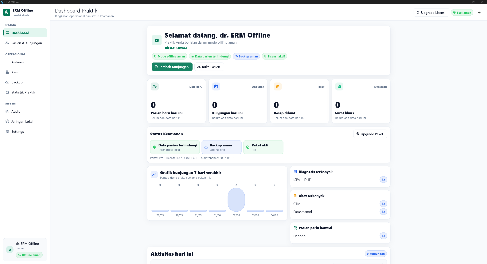

Catatan masih manual
Buku dan kertas cepat dipakai, tetapi riwayat pasien sulit dicari saat kunjungan berikutnya.
RME Offline untuk Laptop Dokter
Kelola pasien, kunjungan, SOAP, resep, surat klinis, statistik praktik, backup, dan aktivasi lisensi dari laptop Windows, tanpa server rumit dan tetap bisa berjalan saat internet tidak tersedia.
Cocok untuk dokter praktik mandiri yang ingin naik kelas dari buku/Excel tanpa langsung memakai sistem cloud yang rumit.

Masalah yang diselesaikan
Buku dan kertas cepat dipakai, tetapi riwayat pasien sulit dicari saat kunjungan berikutnya.
Dokter/admin sering mengetik ulang dokumen yang formatnya sebenarnya bisa dibuat lebih konsisten.
Pasien, kunjungan, diagnosis, obat, dan laporan harian perlu bisa dicari tanpa membuka banyak file.
Banyak praktik butuh sistem lokal yang tetap berjalan saat internet lambat atau tidak tersedia.
Kenapa beli MedPraktik?
MedPraktik membantu praktik kecil bekerja lebih rapi, lebih cepat mencari riwayat, lebih konsisten mencetak dokumen klinis, dan lebih siap berkembang saat jumlah pasien bertambah.
Pasien lama, kunjungan, SOAP, dan catatan penting tidak perlu dicari dari buku atau file terpisah.
Dokter punya format pencatatan yang lebih konsisten untuk kunjungan harian dan kontrol berikutnya.
Resep, surat sakit, surat sehat, rujukan, dan ringkasan kunjungan lebih mudah dibuat dari data yang sudah ada.
Data praktik diarahkan untuk rutin dibackup, bukan tercecer di banyak file dan folder tanpa pola jelas.
Dokumen, laporan, dan alur kerja terasa lebih tertata saat berhadapan dengan pasien.
Tidak perlu server rumit sejak hari pertama. Mulai dari laptop utama, lalu berkembang saat kebutuhan naik.
Workflow produk
Admin mencari pasien lama atau menambahkan pasien baru, lalu membuat kunjungan hari ini.
Paket awal dimulai dari registrasi pasien dan kunjungan. Antrean sederhana tersedia melalui Basic Plus dengan pendampingan.
Dokter mencatat keluhan, pemeriksaan, assessment, plan, diagnosis, resep, dan dokumen klinis.
Resep, surat klinis, ringkasan kunjungan, dan laporan praktik bisa dibuat lebih rapi. Invoice dan kwitansi tersedia pada paket Basic Plus.
Owner dapat menjaga data lokal dengan backup/restore dan melihat aktivitas operasional penting.
Kenapa offline-first?
MedPraktik membantu Anda mulai rapi dari laptop utama, tetap bisa digunakan tanpa internet, lalu dapat naik ke tahap lanjutan saat kebutuhan berkembang.
Fitur utama
Identitas, kontak, alergi, catatan penting, dan riwayat kunjungan pasien.
Kunjungan harian, subjective, objective, assessment, plan, diagnosis, dan follow-up.
Template klinis membantu mempercepat input berulang tanpa menghilangkan catatan dokter.
Resep, surat sakit, surat sehat, rujukan, ringkasan kunjungan, dan laporan profesional.
Format dokumen praktik dibuat konsisten agar admin dan dokter tidak mengetik ulang dari nol.
Lihat kunjungan, pasien baru, pasien kontrol, diagnosis, obat, antrean, dan pemasukan sesuai paket.
Backup lokal terenkripsi dan restore tersedia untuk menjaga data praktik.
Aplikasi diaktifkan sesuai paket dan jumlah perangkat yang dibeli.
Folder penyimpanan dokumen dapat diatur agar arsip praktik lebih mudah ditemukan.
Harga dan paket
Early Access
Untuk pengguna awal yang ingin mulai rapi dan bersedia memberi feedback.
Basic Laptop
Untuk dokter praktik mandiri dengan satu laptop utama.
Assisted Setup
Untuk pengguna yang ingin dibantu instalasi sampai siap dicoba.
Basic Plus
Untuk praktik yang membutuhkan antrean dan kasir sederhana dengan pendampingan.
Pro Roadmap
Untuk kebutuhan tablet, local network, cloud backup/sync, dan SATUSEHAT-ready roadmap.
Harga Early Access berlaku untuk slot pengguna awal dan bukan harga normal permanen. MedPraktik bukan sistem rumah sakit besar; cloud sync dan integrasi SATUSEHAT tetap diposisikan sebagai fitur lanjutan.
Bingung pilih paket? Chat WhatsApp, nanti dibantu rekomendasi sesuai praktik.
Cara membeli
Tidak perlu checkout rumit. Semua dibantu via WhatsApp sampai paket jelas, pembayaran aman, installer diterima, dan aplikasi siap dipakai di laptop praktik. Pembayaran via QRIS/transfer dikirim setelah paket disepakati lewat WhatsApp.
Klik WhatsApp, jelaskan jenis praktik, jumlah perangkat, dan pencatatan saat ini.
Lihat alur MedPraktik dengan data dummy sebelum menentukan paket.
Paket direkomendasikan sesuai kebutuhan Basic, Assisted Setup, atau Basic Plus.
Nominal dan QRIS/rekening dikirim setelah paket disepakati agar tidak salah bayar.
Installer, panduan, dan aktivasi dibantu sesuai paket yang dipilih.
Dibantu sampai bisa dipakai
MedPraktik dirancang untuk praktik kecil yang butuh produk ringan, tetapi tetap ingin pendampingan saat mulai menggunakan sistem baru.
Ekspektasi jelas
Screenshot aplikasi
Lihat tampilan aplikasi dengan data dummy. Visual ini membantu calon pembeli memahami alur sebelum demo WhatsApp atau remote.
Keamanan dan offline
MedPraktik dirancang untuk laptop praktik. Database terenkripsi, backup tersedia, cetak dokumen klinis lebih rapi, dan lisensi diaktifkan sesuai paket.
FAQ
Tidak wajib untuk operasional harian. Produk diposisikan offline-first untuk Windows.
Data tersimpan lokal di laptop atau server praktik, sesuai paket dan setup yang digunakan.
Tahap awal paling cocok untuk satu laptop utama. Kebutuhan multi-perangkat, jaringan lokal, dan tablet masuk fitur lanjutan yang dapat didiskusikan sesuai kebutuhan praktik.
Basic Laptop fokus RME klinis inti: pasien, kunjungan, SOAP, resep, surat, laporan, statistik dasar, dan backup. Basic Plus menambahkan antrean dan kasir sederhana dengan pendampingan.
Resep, surat sakit, surat sehat, rujukan, ringkasan kunjungan, dan laporan tersedia untuk kebutuhan praktik. Invoice dan kwitansi tersedia di Basic Plus.
Ya, backup/restore lokal tersedia sebagai bagian penting dari produk offline.
Belum diklaim terintegrasi. Tahap awal fokus pada RME offline yang stabil. Struktur dan roadmap pengembangan disiapkan agar integrasi lanjutan dapat dipertimbangkan setelah produk inti matang.
Data dapat dipulihkan dari backup yang valid. Praktik tetap perlu disiplin melakukan backup berkala.
Tidak. Harga Rp750 ribu adalah harga Early Access untuk slot pengguna awal yang bersedia memberi feedback, bukan harga normal permanen.
Ya. Paket Assisted Setup mencakup bantuan instalasi, aktivasi lisensi, setup nama praktik, template dokumen, simulasi data dummy, dan panduan backup.
Bisa didiskusikan saat demo. Untuk tahap awal, migrasi sederhana dapat dibantu secara terbatas sesuai kualitas data Excel dan paket pendampingan.
Bisa dibantu melalui proses pindah perangkat. Pastikan backup valid tersedia, lalu hubungi WhatsApp untuk arahan aktivasi di laptop baru.
Bisa. Demo awal diarahkan 15 menit lewat WhatsApp atau remote singkat agar calon pembeli melihat alur produk sebelum memutuskan paket.
Setelah demo dan paket cocok, pembayaran dilakukan manual via transfer bank atau QRIS. Nominal dan instruksi pembayaran dikirim via WhatsApp agar tidak ada salah paket atau salah transfer.
Pembeli mendapat installer, panduan instalasi, dan bantuan aktivasi sesuai paket yang dipilih.
Ya, terutama untuk paket Assisted Setup. Untuk paket Basic, tetap ada panduan instalasi dan arahan aktivasi awal.
Hubungi WhatsApp untuk proses pindah perangkat. Data dipulihkan dari backup yang valid, lalu aktivasi perangkat baru dibantu sesuai ketentuan paket.
Tidak untuk tahap awal. Installer dikirim setelah pembayaran dikonfirmasi agar proses instalasi dan aktivasi tetap jelas.
Aplikasi memakai aktivasi perangkat sesuai paket, sehingga penggunaan tetap sesuai jumlah perangkat yang dibeli.
Demo awal diarahkan 15 menit lewat WhatsApp atau remote singkat untuk melihat jenis praktik, jumlah perangkat, dan paket yang paling masuk akal.
Belum. Tahap awal memakai konsultasi/demo manual agar kebutuhan praktik dipahami sebelum instalasi dan aktivasi.
Konsultasi / Minta Demo
Demo awal via WhatsApp atau remote singkat. Klik tombol demo atau hubungi WhatsApp +62 831-1486-9650.
WhatsApp: +62 831-1486-9650
Biasanya dibalas untuk jadwal demo, instalasi, dan konsultasi paket MedPraktik.